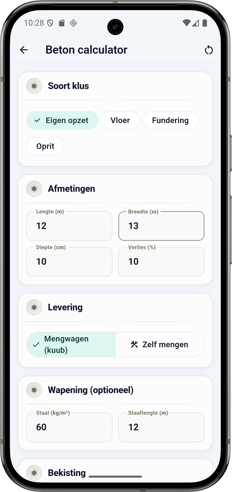
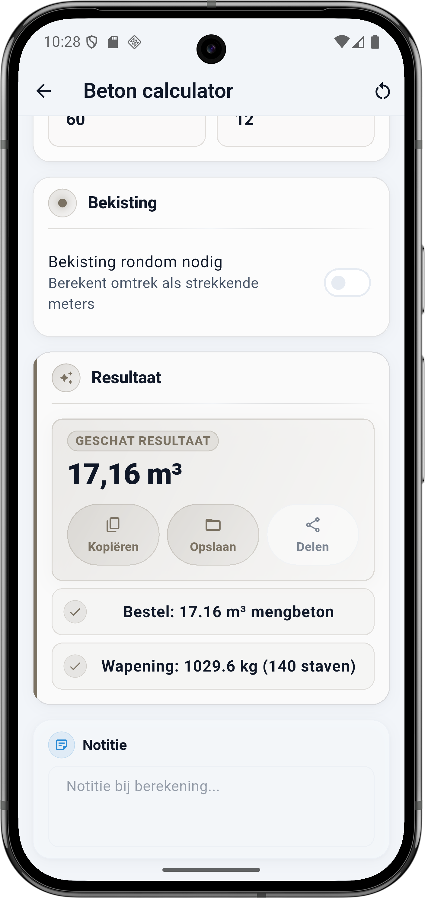

Wat vraagt de calculator
De Beton calculator heeft vijf blokken: Soort klus, Afmetingen, Levering, Wapening (optioneel) en Bekisting. Elk veld hieronder komt één-op-één overeen met de app.
Soort klus
- Eigen opzet — je bepaalt alle waarden zelf. Handig voor niet-standaard klussen.
- Vloer — preset voor een gewone woningvloer. Typische wapening 50 tot 80 kg per m³.
- Fundering — preset voor een strook- of plaatfundering. Zwaardere wapening 80 tot 120 kg per m³.
- Oprit — preset voor een opritplaat. Lichtere wapening 50 tot 70 kg per m³.
Afmetingen
- Lengte (m) — langste zijde van het betonvlak.
- Breedte (m) — kortste zijde.
- Diepte (cm) — dikte van de betonplaat. Standaard woningvloer 10 cm, oprit 15 cm, fundering 25 tot 40 cm.
- Verlies (%) — standaard 10%. Bij ongelijke ondergrond of veel inkepingen: 12 tot 15%. Beton kan je nooit teveel bijbestellen op het laatste moment — reken altijd ruim.
Levering
- Mengwagen (kuub) — bestelbeton per m³. Rendabel vanaf 1,5 m³. Snel verwerkt, constante kwaliteit.
- Zelf mengen — zakken droog mengbeton zelf aanmaken. Rendabel tot 0,5 à 1 m³. Flexibel qua tijd, meer werk, wisselende kwaliteit per batch.
Wapening (optioneel)
- Staal (kg/m³) — hoeveel kilo wapeningstaal per m³ beton. Vuistregels: lichte vloer 40 tot 60, normale woningvloer 60 tot 80, oprit 50 tot 70, strookfundering 80 tot 100, plaatfundering 100 tot 150 kg/m³.
- Staaflengte (m) — lengte van één wapeningsstaaf. Standaard 12 m (vrachtwagenlengte). BuildExact rekent met Ø10 mm wapening (circa 0,617 kg/m) om het aantal staven uit te rekenen.
Bekisting
- Bekisting rondom nodig — zet aan als je bekisting (planken, kistborden) rondom de betonplaat zet. BuildExact berekent dan de omtrek als strekkende meters: 2 × (lengte + breedte).
💡 Reken altijd ruim op beton
Een mengwagen die terug moet komen voor 0,5 m³ kost snel 150 tot 250 euro aan voorrijkosten plus minimum-afname. Een halve m³ extra bestellen kost 60 tot 80 euro. Reken dus altijd met minimaal 10% verlies. Bij een ongelijke ondergrond of een complexe vorm: 15%. Overschot kun je direct wegwerken naar een paadje of kleine fundering.
De formule onder de motorkap
Volume plus verlies, en daarop reken je wapening. Diepte in cm omrekenen naar meter is de meest gemaakte fout — altijd 0,10 m voor 10 cm, niet 10.
Rekenvoorbeeld — vloer 12 × 13 × 0,10 m
Dit is de situatie uit de screenshot: betonplaat van 12 × 13 m met 10 cm dikte, 10 procent verlies, mengbeton per kuub geleverd, 60 kg staal per m³ met staven van 12 m. Geen bekisting apart.
Invoer
| Veld | Waarde |
|---|---|
| Soort klus | Eigen opzet |
| Lengte | 12 m |
| Breedte | 13 m |
| Diepte | 10 cm |
| Verlies | 10 % |
| Levering | Mengwagen (kuub) |
| Staal | 60 kg/m³ |
| Staaflengte | 12 m |
Berekening stap voor stap
- Volume netto: 12 × 13 × 0,10 = 15,6 m³
- Met 10% verlies: 15,6 × 1,10 = 17,16 m³
- Wapening: 17,16 × 60 kg = 1029,6 kg
- Staven Ø10 mm, 12 m lang: 0,617 kg/m × 12 = 7,40 kg per staaf
- Aantal staven: 1029,6 ÷ 7,40 = 139,13 → 140 staven
Resultaat
| Onderdeel | Waarde |
|---|---|
| Bestel mengbeton | 17,16 m³ |
| Wapening | 1029,6 kg (140 staven) |
⚠️ Diepte altijd omrekenen naar meter
De meestgemaakte fout: diepte in cm invullen alsof het meter is. 10 cm wordt 0,10 m, niet 10. Bij 10 m zou je 100× teveel beton bestellen (156 m³ in plaats van 15,6 m³) en krijg je een boze telefoon van de leverancier. BuildExact rekent cm automatisch om naar meter.
Wapening per type klus
Niet elke constructie vraagt dezelfde hoeveelheid staal. Vuistregels (NL):
| Soort klus | Staal (kg/m³) | Opmerking |
|---|---|---|
| Lichte vloer (bergruimte) | 40 – 60 | Weinig belasting, enkel netje |
| Woningvloer | 60 – 80 | Standaard, dubbel netje |
| Oprit | 50 – 70 | Op gelijke zandbodem, meer bij klei |
| Strookfundering | 80 – 100 | Draagfunctie, zwaardere trekstangen |
| Plaatfundering | 100 – 150 | Verdeelt zwaarder gewicht, dubbel korf |
Zo doe je dit in BuildExact
- Open de Beton calculator onder Materialen. Kies het soort klus (Vloer, Fundering, Oprit of Eigen opzet).
- Vul afmetingen in: lengte en breedte in m, diepte in cm. Verlies 10% standaard, hoger bij complexe vorm.
- Levering: Mengwagen bij 1,5 m³ en meer, Zelf mengen onder 1 m³. Zet staal in kg per m³ voor automatische wapening.
- Staaflengte: standaard 12 m. BuildExact rekent met Ø10 mm wapening (0,617 kg/m).
- Bekisting rondom aan als je kistborden rondom plaatst. De calculator rekent de omtrek 2 × (L + B) als strekkende meters.
Veelgestelde vragen
🏗️ Reken je beton in BuildExact
Gratis in de app. Reken, bewaar als project, zet om in een offerte-PDF met je logo — allemaal zonder opnieuw te typen.
Gratis downloaden